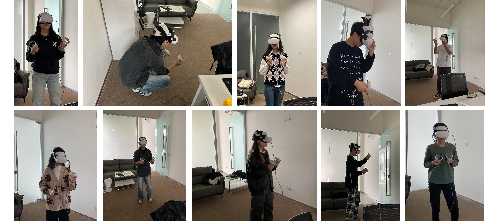

从概念草图到 VR 场景搭建，从交互逻辑调试到用户测试迭代—— Within 的每一步都记录着对"用设计回应社交困境"的思考。
确定 Low-Poly 美术风格，绘制主视觉海报，构建四章叙事结构与情绪节奏。
使用 Unity 2022.3 + XR Interaction Toolkit + PICO SDK 搭建场景，实现抓取、瞬移、绘画等核心交互。
设计同步显示大屏、实体协作卡片、移动端回应者等辅助媒介，构建完整的信息流闭环。
邀请 20 名大学生参与测试，根据反馈优化交互难度、叙事节奏与社交引导机制。
作品不只建立了理论与叙事框架，也通过实际测试验证了其在社交引导上的正向作用。
20 名大学生参与测试后，项目在"降低与陌生人沟通的尴尬感""让任务中的交流变得自然""促进体验结束后的继续交流"等维度上，都呈现出明确的正向反馈。
具身交互让用户更容易进入情境；渐进式协作让沟通不再突兀；跨媒介信息差则把现实交流变成了体验推进的必要条件。
